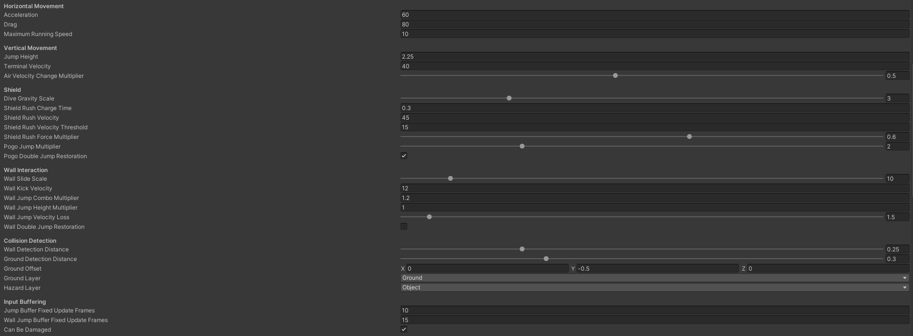
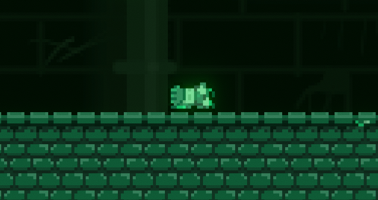

Fragile Knight | Portfolio

Project Details
Technical
Development
Overview
Game
Fragile Knight is a retro-style roguelike vertical platformer about falling into a sewer, losing your sword and improvising to escape the rapidly rising water. Utilise a range of movement abilities including wall jumping, shield bouncing and double jumping to ascend faster and faster towards the surface. Try again and again, improving your skills until you survive for the full 9 minutes through each of the game's unique, progressively difficult, procedural escape attempts. At the end of each run you will be awarded a unique title that represents your performance during the last attempt, as well as a score grading the overall proficiency of your skills.
Production
The game was designed, developed and produced by myself, and two other friends, of the three of us, I wrote all of the code for the project. Fragile Knight was a submission to the 7 Day Rogue-Like game jam, in which participants are given a week to create a rogue-like game, which must involve procedurally generated gameplay and permadeath. As we chose to make semi-curated content for the platforming sections, I had to develop a tool to create, save and edit gameplay sections, which could then be procedurally recreated at runtime. During the week we kept everyone on track using a Trello board. I managed the entire Unity project myself, importing assets when they became available.
Contribution
On this project I contributed...
I was responsible for managing all of the project files and tuning the player's movement and overall gameplay difficulty.
About the code
Level Editor
When creating a tool to build the platforming sections for our game, I had to answer a few critical questions first:
- How should the layouts be saved and loaded? What file format would be most effective for this?
- How could I determine which tile sprite should be placed based on it's surrounding tiles?
When saving the sections, I decided to use a basic text file with a unique extension for our format (.rlt, short for "rogue-like template"). I used C#'s in-built StreamReader/StreamWriter classes for this, and scrambled the data with a simple custom encryption algorithm I wrote. The end result is a text file with lines and lines of scrambled information, each one representing a position, tileset and tile number. A collection of these files are read at runtime to procedurally assemble the gameplay of Fragile Knight, one tile at a time.
Next, to determine which tile sprite should go into each space, I created a spreadsheet and several graphic references to manually figure out the permutations, then I transferred that into code. Thankfully there was a one-to-one correspondance between possible surrounding tiles and the determined tile in the center of them, so I never had to cross-check after determining a tile sprite.
The level editor tool I built for Fragile Knight.
Movement
Once the level editor tool was completed, I worked on the player movement, making it as configurable as I could. Ideally replicating the forigiving, responsive controls of another 2D platformer, Celeste. When scripting, especially while working with others, I have always ensured my variables are well organised using attributes and tooltips wherever necessary. Below is the inspector panel for the player character.
The inspector panel of the player character.
As you can see, there is quite a bit of nuance to the player's movement, ultimately resulting in a more organic-feeling movement system. Additionally, there were multiple timing windows built into the movement system, forgiving slightly early or late inputs in all kinds of scenarios. I found this was especially crucial when wall-jumping, as player instinct is often to move away from the wall a little before jumping, which normally would result in a failed wall-jump. I've been building these input buffers into all my character controllers whenever I can, and the benefits to overall player satisfaction cannot be understated.
Level Generation
Having gameplay sections stored in files is a good start, but what I really needed was a way to then read the data and assemble gameplay at runtime. Decoding the encrypted data was pretty easy, as I already had the code required to do this, but procedurally generating the objects and components required for turning that into hitboxes and graphics using this info was a little more involved.
The gameplay sections are generated and unloaded one at a time as the player ascends during a run. The parent gameobject is generated entirely through script, then given the required components to function, a Grid, Tilemap, Tilemap Renderer, Tilemap Collider 2D, and Rigidbody 2D are all added and configured, then the tiles are laid onto it by reading the section data line by line, with enemies and hazards added as separate child objects due to their potentially dynamic nature.
Finally, with the ability to recreate sections with the stored level data, I added a randomiser with some extra code to prevent any given section appearing twice in a row or uneven section distribution. This works using a bag randomiser like Tetris, and then I check if the first element of the new set is the same as the last element of the last set, and if this is true then the new order is reversed. Choosing sections this way is great for gameplay, as the player doesn't notice repetition nearly as much as they would with an unfiltered randomiser.
A zoomed out view of the Unity editor during gameplay, showing the level generation.
Afterword
Game Jam participation was, as always, an enlightening, enjoyable, stressful time for me. This 7DRL was no exception. I consistently come out of them tired but grateful for the experience, having learned tons about game development, team coordination, and problem-solving. Fragile Knight was by far the best work we have produced in a jam so far (as of early 2021). I'm incredibly proud of the end result we produced as a group, and feel very grateful to have worked with such talented members over that short week of development.
While it still has its flaws, the game we made then continues to motivate me, as a display of what my group and I are capable of within such a short period of time as well as personal growth and improvement over past game jam entries. It tested my communication, patience, and ability to solve problems under pressure, and yet we persevered and completed the game on time, even having time for some quick patches after the initial release.
The player character in Fragile Knight, unconscious before the start of a new escape attempt.
Thank you for reading!
Feel free to check out the store page for the game on Itch.io or simply return to the home page.